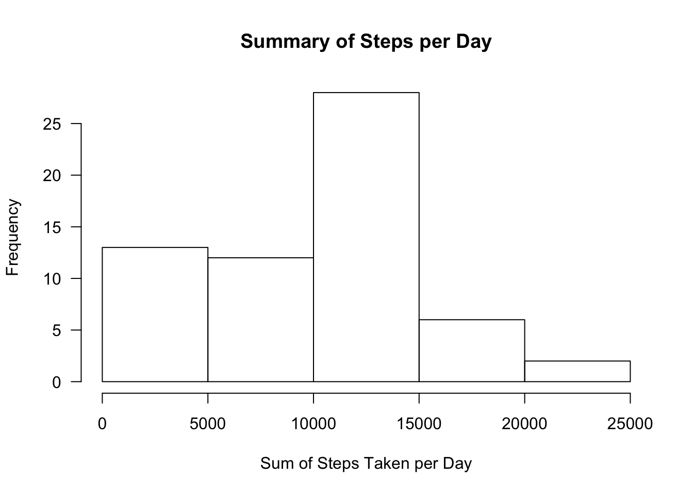
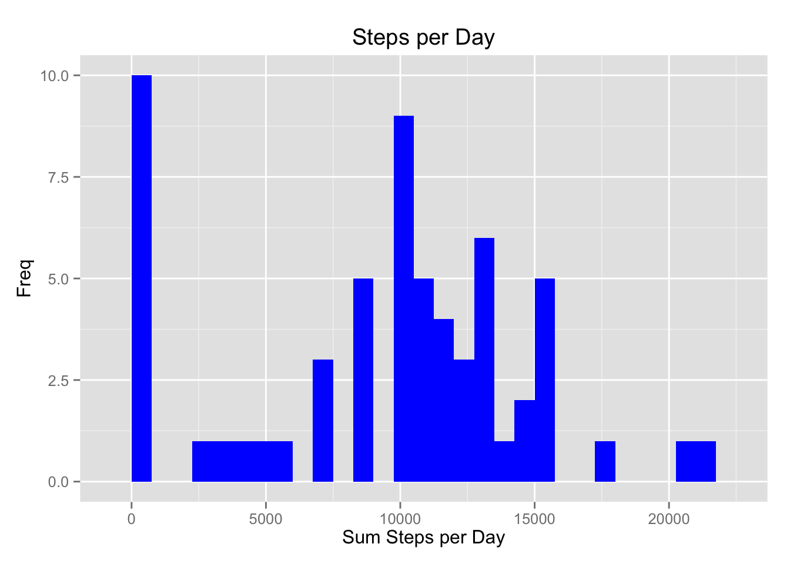
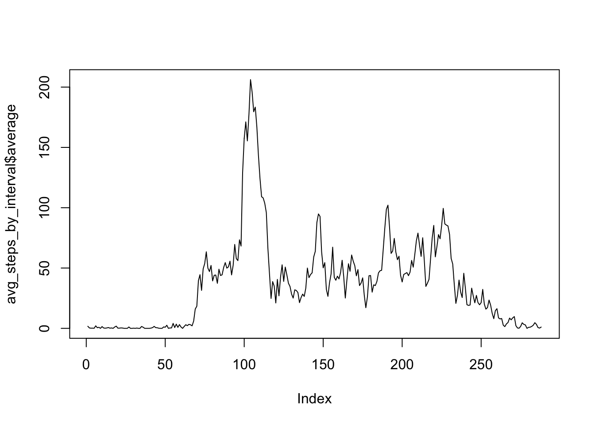
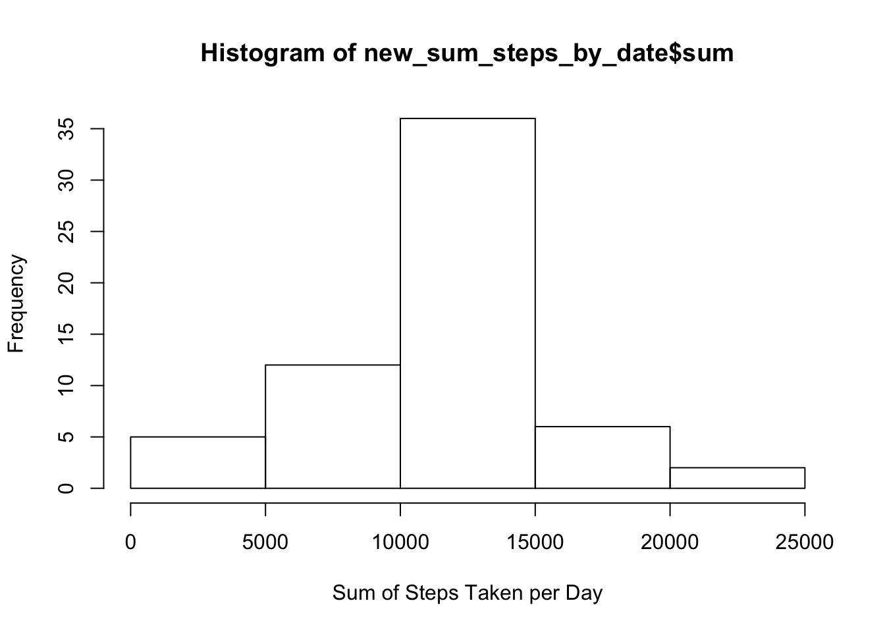
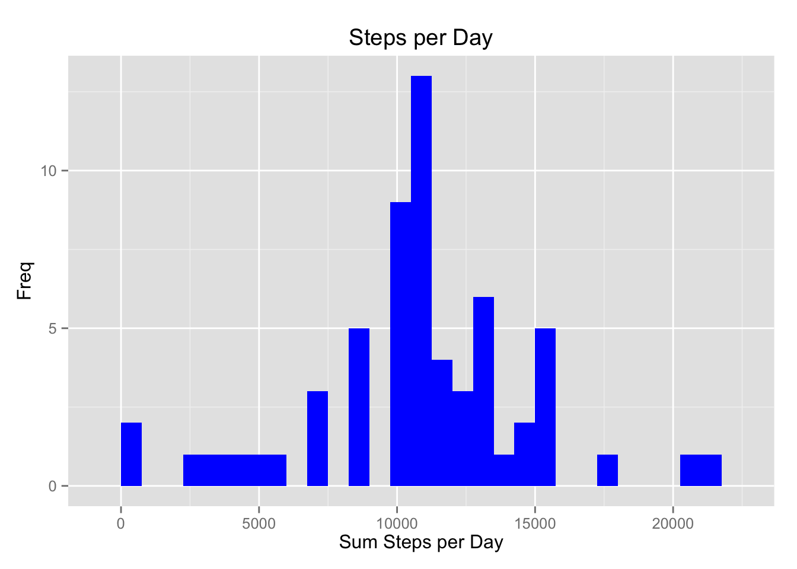
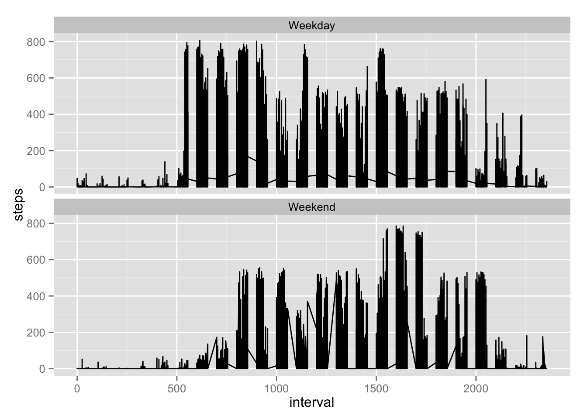

library(dplyr)##
## Attaching package: 'dplyr'
##
## The following object is masked from 'package:stats':
##
## filter
##
## The following objects are masked from 'package:base':
##
## intersect, setdiff, setequal, unionlibrary(ggplot2)
setClass("myDate")
setAs("character","myDate",function(from) format(strptime(from,format="%Y-%m-%d"),"%Y-%m-%d"))
cls <- c("numeric","myDate","numeric")data <- read.csv('./activity.csv',header=TRUE,colClasses=cls)for (i in 1:5) { print("see prerequisites section....")}## [1] "see prerequisites section...."
## [1] "see prerequisites section...."
## [1] "see prerequisites section...."
## [1] "see prerequisites section...."
## [1] "see prerequisites section...."sum_steps_by_date <- data %>% group_by(date) %>% summarize(sum=sum(steps,na.rm=TRUE))#base plotting
par(mfrow=c(1,1),las=1)
hist(sum_steps_by_date$sum,xlab="Sum of Steps Taken per Day",main="Summary of Steps per Day")
#ggplot
ggplot(sum_steps_by_date,aes(x=sum)) + geom_histogram(fill="blue",binwidth=750) + labs(y=expression("Freq")) + labs(x=expression("Sum Steps per Day")) + labs(title=expression("Steps per Day")) 3. Calculate and report the mean and median of the total number of steps taken per day
mean_steps_by_day <- data %>% group_by(date) %>% summarize(mean=mean(steps)) %>% select(mean)
median_steps_by_day <- data %>% group_by(date) %>% summarize(median=median(steps)) %>% select(median)
report_table <- data %>% group_by(date) %>% count(date) %>% select(date)
report_table <- cbind(report_table,mean_steps_by_day)
report_table <- cbind(report_table,median_steps_by_day)avg_steps_by_interval <- data %>% group_by(interval) %>% summarise(average=mean(steps,na.rm=TRUE))
plot(avg_steps_by_interval$average,type="l") 2. Which 5-minute interval, on average across all the days in the dataset, contains the maximum number of steps?
avg_steps_by_interval[which.max(avg_steps_by_interval$average),]## Source: local data frame [1 x 2]
##
## interval average
## 1 835 206.1698length(which(is.na(data) == TRUE))## [1] 2304#create a new data table where the averages of each interval are calulated across all days
mean_steps_by_interval <- data %>% group_by(interval) %>% summarize(mean=mean(steps,na.rm=TRUE)) %>% select(interval,mean)
#join the existing table and the mean table by the interval creating a new column that has the average steps for that interval
new <- inner_join(data,mean_steps_by_interval,by="interval")
#loop through the new table and if any value in the 1st column is NA, updated it to be the value of the 4th, the average interval
for (i in 1:dim(new)[1]) {
if (is.na(new[i,1]) == TRUE) {
new[i,1] <- round(new[i,4])
}
}new <- new %>% select(steps,date,interval)#new summary table
new_sum_steps_by_date <- new %>% group_by(date) %>% summarize(sum=sum(steps,na.rm=TRUE))
#plot package
hist(new_sum_steps_by_date$sum,xlab="Sum of Steps Taken per Day")
#ggplot package
ggplot(new_sum_steps_by_date,aes(x=sum)) + geom_histogram(fill="blue",binwidth=750) + labs(y=expression("Freq")) + labs(x=expression("Sum Steps per Day")) + labs(title=expression("Steps per Day"))
#calculate and report mean and median of new dataset
new_mean_steps_by_day <- new %>% group_by(date) %>% summarize(mean=mean(steps)) %>% select(mean)
new_median_steps_by_day <- new %>% group_by(date) %>% summarize(median=median(steps)) %>% select(median)
new_report_table <- new %>% group_by(date) %>% count(date) %>% select(date)
new_report_table <- cbind(new_report_table,new_mean_steps_by_day)
new_report_table <- cbind(new_report_table,new_median_steps_by_day)new$wday <- as.factor(ifelse(weekdays(as.Date(new$date)) %in% c("Saturday","Sunday"), "Weekend", "Weekday"))ggplot(new,aes(x=interval,y=steps)) + geom_line() + facet_wrap(~wday,nrow=2,ncol=1)
knitr2html(“PA1_template.Rmd”,“PA1_template.html”)